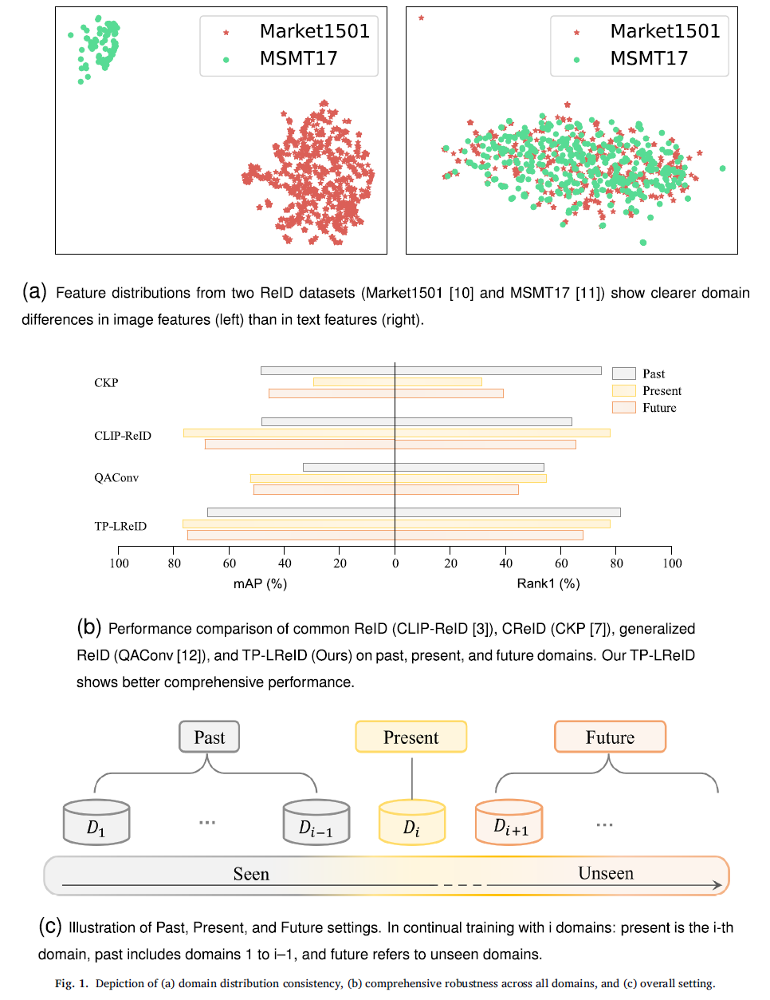
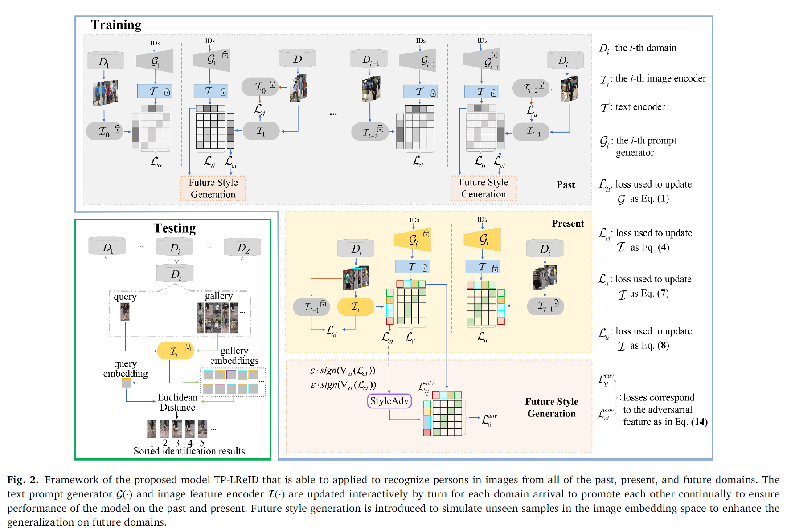
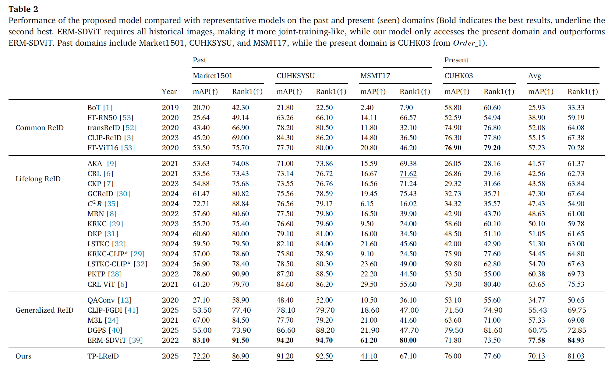
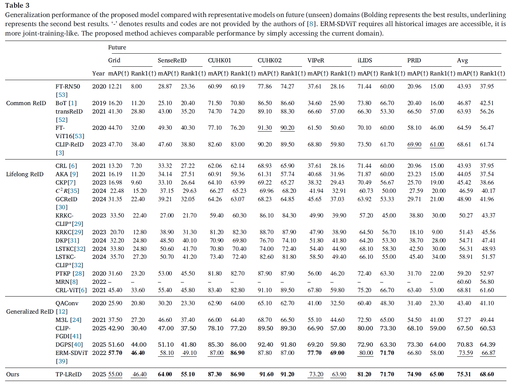
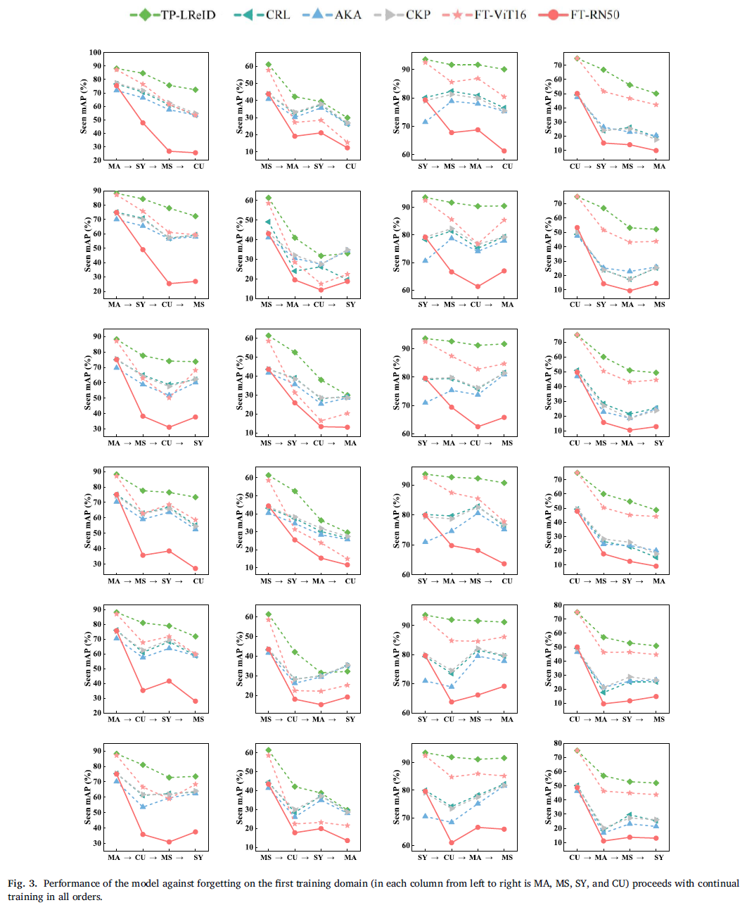
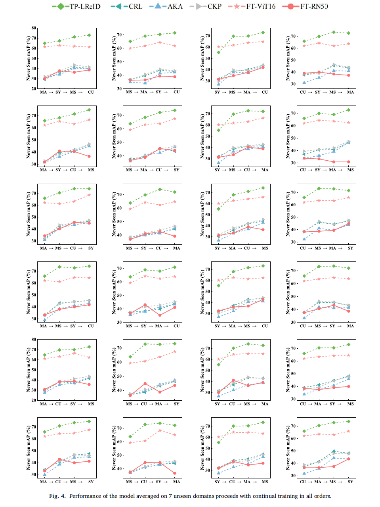

TP-LReID: Lifelong person re-identification using text prompts
Person re-identification (ReID) aims to match identities captured by different cameras across time and locations,
requiring models to maintain discrimination ability on historical (past), current (present), and unseen (future) domains.
Although image-based ReID has achieved remarkable progress, recent studies demonstrate that incorporating textual information
can further enhance performance, as text provides high-level semantic descriptions that are more domain-consistent than visual features (Fia. 1a).
With the emergence of large-scale vision-language models such as CLIP, hybrid image–text ReID methods have shown strong performance
when trained on a single present domain. However, these methods, referred to as common ReID, focus solely on fitting a static
distribution and fail to handle continuously evolving data streams or generalize to unseen domains.
To address distribution shifts over time, continual person ReID (CReID) has been proposed to incrementally learn domain-consistent
representations while alleviating catastrophic forgetting through regularization and knowledge accumulation. Despite improved performance
on past domains, existing CReID methods lack explicit mechanisms to enhance generalization to future unseen domains. In contrast,
generalized person ReID aims to improve robustness to unseen domains using data augmentation, meta-learning, or adversarial training,
but it does not model the sequential and continual nature of real-world data streams, as shown in Fig. 1b.

In this work, we bridge these paradigms by proposing a lifelong person ReID framework that leverages text prompts to guide domain-consistent feature learning across past, present, and future domains, as shown in Fig. 1c. By aligning image features with semantically stable text embeddings throughout lifelong learning and introducing style-adversarial training to simulate future domain shifts, our method simultaneously achieves performance preservation, forgetting mitigation, and generalization enhancement. This unified framework combines the strengths of common ReID, continual ReID, and generalized ReID, enabling robust identity recognition under realistic, evolving deployment scenarios.
Our method combines the advantages of common ReID, continual ReID and generalized ReID to achieve performance improvement, forgetting prevention, and generalization promotion on domains corre-sponding to present, past, and future. The main contributions are summarized as follows:

We conduct experiments on 11 person ReID benchmarks, namely Market, CUHKSYSU, MSMT17, CUHK03, Grid, SenseReID, CUHK01, CUHK02, VIPER, iLIDS, the mean average precision (mAP) and Rank1 are used to evaluate performance on the datasets. Datasets are downloaded from Torchreid_Dataset_Doc and DualNorm. We compare with (1) Lifelong ReID methods: CRL, AKA, CKP, MRN, GCReID, PTKP, LSTKC, DKP, KRKC, and 𝐶2𝑅; (2) Common ReID methods: FT-RN50, BoT, FT-ViT16, TransReID, CLIP-ReID; and (3) Generalized ReID methods: QAConv, CLIP-FGDI, M3L, DGPS, and ERM-SDViT.




Citation: The author who uses this code is defaultly considered as agreeing to cite the following reference @article{liu2025tp, title={TP-LReID: Lifelong person re-identification using text prompts}, author={Liu, Zhaoshuo and Guo, Zhiwei and Feng, Chaolu and Li, Wei and Yu, Kun and Hu, Jun and Yang, Jinzhu}, journal={Pattern Recognition}, pages={112326}, year={2025}, publisher={Elsevier} } }